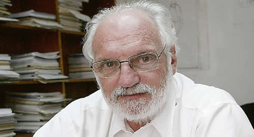

Real Chubut - Agencia de Noticias


“Es una pavada decir que el dólar vaya al valor que sea”
• EL ECONOMISTA JUAN CARLOS DE PABLO EXPLICA QUÉ SIGNIFICA EN REALIDAD RECUPERAR LA CONFIANZA
Tampoco es la solución correcta la que plantean aquellos que pregonan usar plenamente las reservas sin otros acompañamientos. Para De Pablo, el Fondo debe flexibilizar el empleo de las reservas.
El profesor Juan Carlos De Pablo siempre cuestionó la organización del Gobierno y advertía el problema de no saber quién estaba a cargo. Sin embargo, en medio de la actual crisis, considera que aquellos que piden la cabeza de Marcos Peña están errados porque eso es humillar al Presidente y no se puede pedir eso. Sobre el nuevo organigrama del Gabinete pone reparos, ya que una cosa es el organigrama formal y otra el informal. De Pablo confía en la influencia política del presidente Macri para acelerar el nuevo acuerdo con el Fondo Monetario.
A continuación, el diálogo que mantuvo con este diario.
Periodista: A la vista de los recientes acontecimientos, ¿cómo puede el Gobierno recuperar la confianza?
Juan Carlos De Pablo: Hay que intentarlo, y hay que ver si sale o no. Pero primero vamos a entender a qué nos referimos cuando hablamos de recuperar la confianza. Recuperar la confianza quiere decir que un señor que maneja portafolios deja de vender títulos argentinos, no sé si compra, deja de vender. Por ejemplo, uno llega a su casa y la bañadera está desbordada, y la canilla está abierta. Lo primero que uno hace es cerrar la canilla: ese es el flujo. La segunda cosa es qué hacer con el agua que está en la bañadera: ese es el stock. Lo que en este momento está haciendo el Gobierno cuando dice "déficit cero" es cerrar la canilla, después les queda el problema de qué hacemos con los títulos que están emitidos. Entonces, confianza hoy en ese sentido quiere decir que los títulos argentinos que tienen esos inversores no los vendan o no estén dispuestos a rifarlos de manera que el BCRA tenga que salir a recuperarlos, o algo por el estilo. En el plano de la economía real, quiere decir que alguien ve algo para adelante por lo cual saca plata de su bolsillo y se pone a hacer cosas. No me refiero a crédito subsidiado ni nada por el estilo, sino cuando el sector privado dice: "¡Ah, llegó la hora, así que vamos!", cosa que ocurrió en el arranque de la convertibilidad, o en el arranque del Plan Austral, que no fueron planes recesivos, sino reactivantes porque la gente dijo: "¡Ah... ahora sí!". No es una fórmula ni una ley.
P.: Se cometieron todas las torpezas inimaginables en medio de una crisis; ¿cuál es entonces la señal o gesto a dar?
J.C.D.P.: El Presidente viene y dice: "Muchachos, no nos prestan más, así que déficit cero"; viene Dujovne y dice: "Déficit cero", y dentro de las alternativas agarra una, con perdón de los exportadores, que era de las más plausible, porque transitoriamente mejoraste tu posición por el tipo de cambio y además fue algo generalizado; se la agarró con todos los sectores. La importancia del (último) discurso del Presidente es que le dio apoyo sicológico a Dujovne, porque al ministro todos le dan consejos, pero hay que decirles a los exportadores: "Macho, te tengo que sacar plata" y cosas por el estilo y del lado de los gastos "eso no se puede hacer", etc. Por eso es muy importante que el Presidente le dé fuerza a su ministro. Exactamente lo mismo que hizo Alfonsín cuando le dio fuerza con el discurso que hizo el 14 de junio de 1985 antes que hablara Sourrouille.
P.: ¿Pero es momento para hablarles a los tenedores de bonos o a los tenedores de pesos?
J.C.D.P.: A todos, es el mismo discurso. Un tenedor de bonos dice: "No me van a pagar, me van a hacer algo", etc.; y el tenedor de pesos dice: "Qué pasará con la tasa de inflación", etc. La diferencia es la siguiente, pensemos en una persona que maneja un fondo de pensión extranjero, si mantiene los bonos de Argentina y no pasa nada, y mejora un poquito el rendimiento promedio de su cartera y nadie se da cuenta. Si, en cambio, mantiene los títulos argentinos y vuelan por el aire, pierde un pedazo del valor del fondo y lo rajan. Acá viene lo que Guillermo Calvo explica tan bien: "Los comportamientos de manada". ¿Vos te vas a hacer el valiente? ¿Por qué te vas a hacer el valiente? Vos decís: "¡No, flaco, vendamos ahí, vamos, total!". Si estás equivocado, el que se queda con los títulos va a hacer un gran negocio, y si no, bueno. Por eso digo, cuidado, el primer movimiento es cerremos el flujo; ahora viene la batalla del stock, donde en función de lo que veo, y confiando en la integridad de un Caputo, etc., veremos, aunque no hay cosas milagrosas. Pero tenés una persona que da la impresión de que sabe cuáles son las alternativas y cómo debe operar. Ese es el punto.
P.: ¿Se lo sobrestimó al considerarlo que era el bombero especial para el incendio ya que mucho parece que no lo sofocó?
J.C.D.P.: Y sigue el incendio. Algún día los historiadores se van a acordar de todo este período y que mientras nosotros conversábamos pasaron muchas cosas. Hay hechos históricos, pero hay otras cosas donde se van diluyendo las mismas. Ahora en el medio de la batalla no pregunten nada, el tipo sigue, el bombero cree que el fuego se apagó y bueno, van y vienen.
P.: ¿Pero no es lo mismo que un inversor venda bonos que su tía compre u$s100 con sus depósitos en pesos? La bomba de la corrida son los depósitos, no los bonos.
J.C.D.P.: Es una música diferente. Vamos primero al tema pesos-dólares. El mes pasado, cuando me preguntaban, yo decía que con el dólar a $40 no sé sí compraría dólares. De repente, le preguntaría a mi mujer si no tenemos que hacer nada en la casa, por ejemplo pintar. Hoy un empresario de la construcción me comentaba que así como se han comprometido algunos edificios por el tema del crédito se está reavivando la parte individual, por ejemplo, aquel que tiene un terreno en un country ahora puede aprovechar los dólares que tiene, que subieron, y sabe que es transitorio.
P.: La biblioteca está dividida: ¿hay qué usar las reservas o no?
J.C.D.P.: Las reservas no son un único instrumento. Si van a usar las reservas y nada más, se las van a patinar porque la demanda de pesos tiene finalmente que ver con un futuro. Entonces, vos podés decir: "Saco todos los pesos y dolarizo la economía", pero no están pensando en eso. Entonces, si no están pensando en esto, vos tenés que decir: "Voy a defender un tipo de cambio, pero que tiene que ver con algo". O sea, tiene que estar vinculado con lo que está pasando en materia monetaria, fiscal, a cuánto falta para cambiar las tarifas públicas, para ver a cuánto vas a defender. Porque si no hay gente que dice: "Vendé u$s10.000 millones a $30", y te los van a comprar porque si la gente cree que $30 es un precio absurdo, te los van a comprar y te van a preguntar ahora qué hacés. Agreguemos un tema que imagino se está negociando en Washington. El acuerdo con el FMI tiene, me parece, una pauta fundamental que es la relación déficit/PBI, de esa no te muevas, la tenés que cumplir, y Dujovne dice: "Por qué me miran si la estoy sobrecumpliendo", ¡gracias! Pero hay otras cláusulas que disponen "la plata que yo te doy -dice el FMI- la vas a usar para cancelar algunos compromisos en dólares y para rescatar algunos títulos que tenía el BCRA en pesos; con esa plata vas a rescatar Letes, etc. No vas a usarla para defender el tipo de cambio". Esto es equivalente a decir tipo de cambio libre. ¿Qué quiere decir tipo de cambio libre: "a lo que venga". Lógicamente, "a lo que venga" me quedo sin reservas. Acá hay algunos guapos que dicen "a lo que venga", es una pavada. Dicen ¡dólar de $200 no importa! Es un pavada. No es "a lo que venga", vos podés decir dentro de cierto rango lo voy a defender y el FMI va a preguntar cuál. El Fondo implícitamente te dice "a lo que venga" porque no quiere darte u$s50.000 millones para que mañana los argentinos tengan u$s50.000 millones afuera.
P.: ¿Cuál es su sensación?
J.C.D.P.: Lo que me parece que el equipo económico está negociando con el Fondo es que no pueden ser tan estrictos de decir "a lo que venga", porque el dólar de $80 no se banca. Entonces, si el dólar a $80 no va, tengo que hacer cosas y de repente voy a tener que vender, etc. Estoy esperando que el FMI diga bueno, sí, dentro de ciertos límites con cierta prudencia. Pero ahí hay una especie de muy buena relación que tiene que ver, me parece, con que de arriba para abajo viene la buena relación. Creo que el presidente Macri en esto ha usado muy bien la influencia política que tiene por lo cual el directorio del Fondo aprobó cosas que capaz en esta Argentina no hubiera aprobado. A mí me gustan los procesos decisorios, de modo que si vos sos un burócrata del Fondo y ves que el Directorio está en la joda, no te vas a poner serio. Por eso les recalco a mis compatriotas que el problema no es el Fondo, sino la realidad. Vos al Fondo le vendés un buzón, te lo compran y vos tenés el problema, porque ellos se fueron a Washington.
P.: Algunos dicen para qué querés las reservas si podés terminar en una crisis final.
J.C.D.P.: Es cierto. Pero los dólares se compran con pesos, se puede hacer la cuenta para el otro lado y ahí hay mil hipótesis. Ahí decimos, la demanda de dinero hasta cuánto aguantamos, una caída a la mitad, a la cuarta parte.
Fuente: Ambito